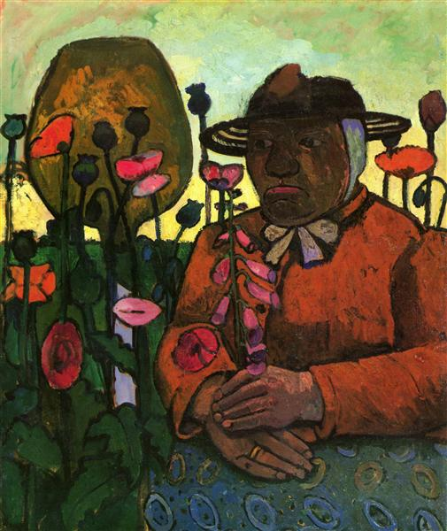

Картинная галерея портретов
 Мэриан
Мэриан

“Старуха из богадельни”
В глубокой задумчивости глядя перед собой, пожилая женщина крепко сжимает в руке стебель наперстянки. Фигура помещена на переднем плане у самого края картины, за спиной женщины - поле маков и перевернутая бутыль. Цветы, женщина и бутылка написаны плотными густыми мазками, крупные формы заполняют все пространство холста. Художница прекрасно чувствует колорит: так, небо на ее картине отсвечивает интенсивным желто-зеленым тоном. Модерзон-Беккер родилась и работала в Германии, но благодаря частым поездкам в Париж она была знакома с фактурной манерой живописи Ван Гога и с упрощенными формами и насыщенным колоритом картин Поля Гогена. Данная работа была написана художницей в последний год жизни, трагически рано оборвавшейся, когда ей исполнился всего тридцать один год. Ван Гог, Гоген, Гончарова, Явленский, Нольде.
 “На главную”
“На главную”